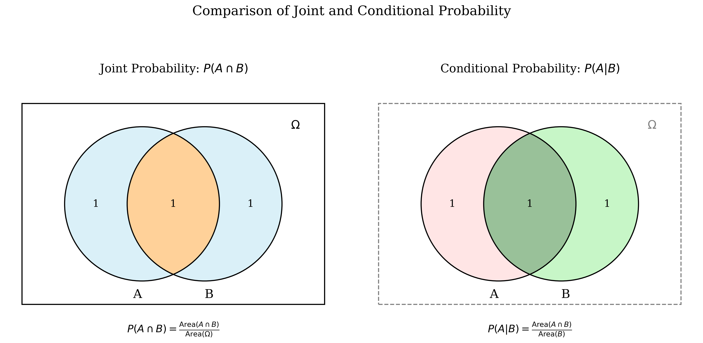
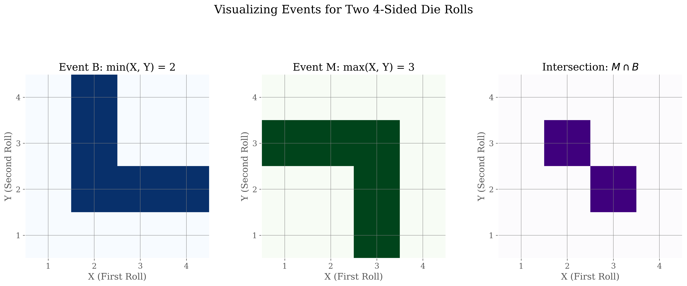
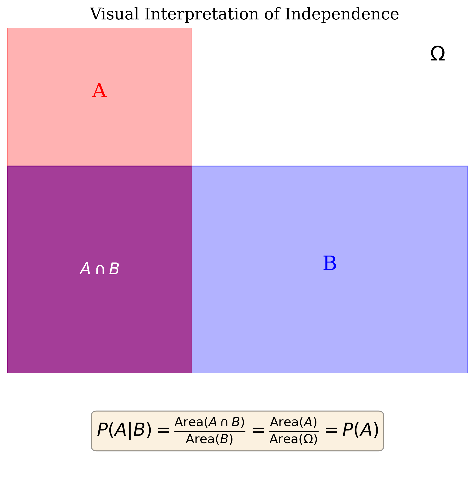
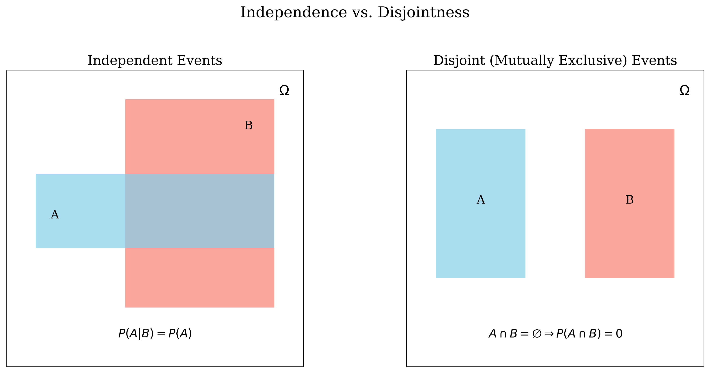
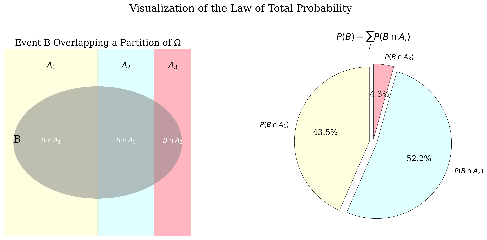
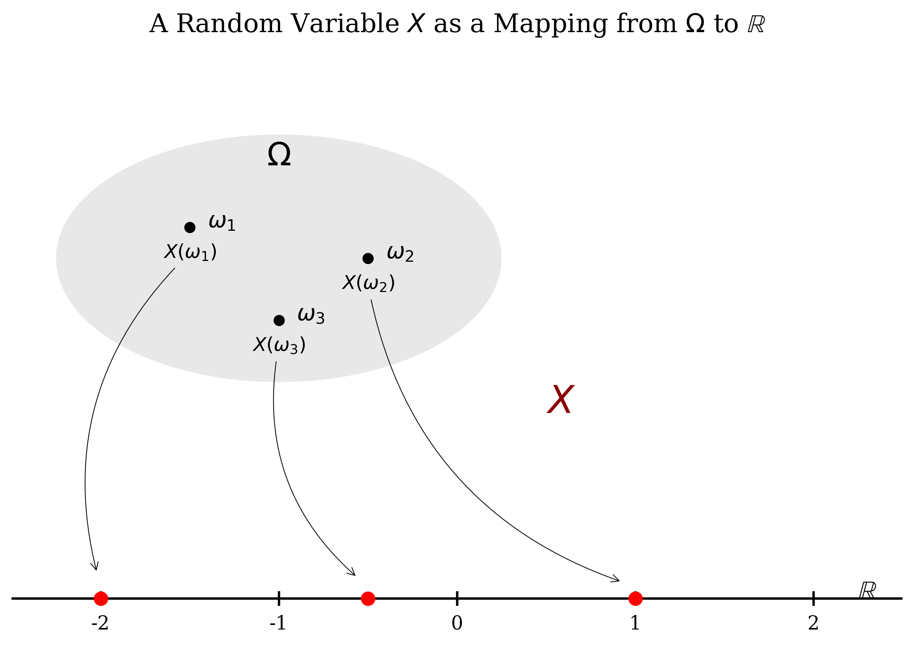

This document covers foundational concepts in probability theory. Key topics discussed include conditional probability (definition, properties, multiplication rule), statistical independence (definitions via product rule and conditional probability, properties, distinction from disjoint events, independence of multiple events), the law of total probability, and Bayes' theorem (including its proof and the full formula incorporating total probability). This material is synthesized from faculty-provided resources [1] and standard probability textbooks by Sheldon M. Ross [2] and Stanley H. Chan [3].
Applications of Total Probability and Bayes' Theorem
Two fundamental principles frequently applied in probability are the Law of Total Probability, which facilitates calculating the probability of an event by partitioning the sample space, and Bayes' Theorem, which enables the calculation of posterior probabilities by "inverting" conditional probabilities.
(Example) Consider a tennis tournament with three categories of players: A, B, and C.
- Prior Probabilities (Partition): The distribution of player types is:
- \(\mathbb{P}[A] = 0.5\)
- \(\mathbb{P}[B] = 0.25\)
- \(\mathbb{P}[C] = 0.25\)
- Conditional Probabilities (Win Rates): Let \(W\) denote the event that you win a match. Your probability of winning depends on the opponent's type:
- \(\mathbb{P}[W \mid A] = 0.3\)
- \(\mathbb{P}[W \mid B] = 0.4\)
- \(\mathbb{P}[W \mid C] = 0.5\)
Question (a): Determine the overall probability of winning a randomly selected match, \(\mathbb{P}[W]\).
Applying the Law of Total Probability, we sum the win probabilities over the partition \(\{A, B, C\}\):
- Formula: \(\mathbb{P}[W] = \mathbb{P}[W \mid A]\mathbb{P}[A] + \mathbb{P}[W \mid B]\mathbb{P}[B] + \mathbb{P}[W \mid C]\mathbb{P}[C]\) [1][3].
- Calculation: \[ \mathbb{P}[W] = (0.3)(0.5) + (0.4)(0.25) + (0.5)(0.25) = 0.15 + 0.10 + 0.125 = 0.375 \]
Question (b): Given that you have won a match, what is the probability that your opponent was a type A player, \(\mathbb{P}[A \mid W]\)?
Applying Bayes' Theorem, we calculate the posterior probability:
(Example) This example illustrates the importance of base rates in conditional probability calculations.
- Problem: A diagnostic test for a specific disease has the following characteristics:
- Sensitivity: The test correctly identifies the disease (positive result) in 95% of cases where it is present.
- False Positive Rate: The test incorrectly indicates the disease (positive result) in 1% of cases where it is absent [2].
- Base Rate: The prevalence of the disease in the population is 0.5% (or 0.005).
- Question: If a randomly selected individual tests positive, what is the probability they actually have the disease?
Setup:
- Let \(D\) be the event that the person has the disease. \(\mathbb{P}[D] = 0.005\).
- Let \(D^c\) be the event that the person is healthy. \(\mathbb{P}[D^c] = 1 - 0.005 = 0.995\).
- Let \(E\) be the event that the test result is positive.
Conditional Probabilities:
- \(\mathbb{P}[E \mid D] = 0.95\) (Sensitivity).
- \(\mathbb{P}[E \mid D^c] = 0.01\) (False Positive Rate).
Goal: Calculate \(\mathbb{P}[D \mid E]\).
- Step 1: Calculate \(\mathbb{P}[E]\) using the Law of Total Probability. \[ \mathbb{P}[E] = \mathbb{P}[E \mid D]\mathbb{P}[D] + \mathbb{P}[E \mid D^c]\mathbb{P}[D^c] \] \[ \mathbb{P}[E] = (0.95)(0.005) + (0.01)(0.995) = 0.00475 + 0.00995 = 0.0147 \]
- Step 2: Apply Bayes' Formula. \[ \mathbb{P}[D \mid E] = \frac{\mathbb{P}[E \mid D]\mathbb{P}[D]}{\mathbb{P}[E]} = \frac{(0.95)(0.005)}{0.0147} \approx 0.323 \]
Conclusion: Despite the test's 95% sensitivity, the probability that a person with a positive test result actually has the disease is only approximately 32.3%. This highlights the impact of the low base rate of the disease [2].
(Example) This example demonstrates Bayesian updating of belief based on evidence.
- Problem: A student answers a multiple-choice question with \(m\) options [2].
- The probability the student knows the answer is \(p\).
- The probability the student guesses is \(1-p\).
- If guessing, the probability of selecting the correct answer is \(1/m\).
- Question: Given the student answered correctly, what is the probability they knew the answer?
Setup:
- Let \(K\) be the event the student knows the answer. \(\mathbb{P}[K] = p\).
- Let \(K^c\) be the event the student guesses. \(\mathbb{P}[K^c] = 1-p\).
- Let \(C\) be the event the answer is correct.
Conditional Probabilities: \(\mathbb{P}[C \mid K] = 1\) and \(\mathbb{P}[C \mid K^c] = 1/m\).
Goal: Calculate \(\mathbb{P}[K \mid C]\).
- Step 1: Calculate \(\mathbb{P}[C]\) using the Law of Total Probability. \[ \mathbb{P}[C] = \mathbb{P}[C \mid K]\mathbb{P}[K] + \mathbb{P}[C \mid K^c]\mathbb{P}[K^c] \] \[ \mathbb{P}[C] = (1)(p) + (1/m)(1-p) \]
- Step 2: Apply Bayes' Formula. \[ \mathbb{P}[K \mid C] = \frac{\mathbb{P}[C \mid K]\mathbb{P}[K]}{\mathbb{P}[C]} = \frac{p}{p + (1/m)(1-p)} \] Simplifying yields: \(\mathbb{P}[K \mid C] = \dfrac{mp}{1 + (m-1)p}\).
For instance, if \(m=5\) and \(p=0.5\), then \(\mathbb{P}[K \mid C] = \dfrac{5(0.5)}{1+(4)(0.5)} = \dfrac{2.5}{3} = 5/6\) [2].
Conditional Probability
Conditional probability addresses the likelihood of an event occurring given that another event has already occurred. This knowledge often modifies the original probability assessment [3][1]. In many situations, we do not know the precise outcome of an experiment, but we have partial information suggesting that the outcome belongs to a specific event (subset of the sample space). Conditional probability formalizes reasoning under such partial information [1].
(Example) Consider the experiment of tossing two fair dice.
- The probability that the sum is 6 is \(\mathbb{P}[\text{Sum}=6] = 5/36\). The sample space consists of 36 equally likely outcomes. The event includes \(\{(1,5), (2,4), (3,3), (4,2), (5,1)\}\).
- Suppose it is known that the first die resulted in a 4 [2].
- This information reduces the effective sample space to 6 outcomes: \(\{(4,1), (4,2), (4,3), (4,4), (4,5), (4,6)\}\) [2].
- Assuming these outcomes remain equally likely within the reduced space, each now has a probability of \(1/6\) [2].
- Within this reduced sample space, only the outcome \((4,2)\) results in a sum of 6.
- Thus, the conditional probability that the sum is 6, given the first die was 4, is \(1/6\).
Formal Definition
The intuition involves considering the conditioning event F as the new (reduced) sample space. For event E to also occur under this condition, the outcome must lie within the intersection \(E \cap F\). The probability is then normalized by the probability of this new sample space, \(\mathbb{P}[F]\) [2][3][1].
(Definition) Given a probability space \((\Omega, \mathcal{F}, \mathbb{P}[\cdot])\), the conditional probability of event E given that event F has occurred (assuming \(\mathbb{P}[F] > 0\)) is defined as:

The Multiplication Rule
Rearranging the definition provides the multiplication rule: \[ \mathbb{P}[E \cap F] = \mathbb{P}[F]\mathbb{P}[E \mid F] \quad (\text{if } \mathbb{P}[F] > 0) \] This rule is fundamental for calculating the probability of the simultaneous occurrence of events, particularly in sequential experiments [1].
(Example)
- Problem: An urn contains 7 black and 5 white balls. Two balls are drawn sequentially without replacement. Calculate the probability that both drawn balls are black [2].
- Let \(F\) be the event that the first ball drawn is black.
- Let \(E\) be the event that the second ball drawn is black.
- We seek \(\mathbb{P}[E \cap F]\).
- The probability of the first ball being black is \(\mathbb{P}[F] = 7/12\).
- Given the first was black, there are 6 black and 5 white balls remaining (11 total). Thus, the conditional probability of the second being black given the first was black is \(\mathbb{P}[E \mid F] = 6/11\) [2].
- Applying the multiplication rule: \(\mathbb{P}[E \cap F] = \mathbb{P}[F]\mathbb{P}[E \mid F] = \left(\frac{7}{12}\right)\left(\frac{6}{11}\right) = \frac{42}{132}\).
Examples of Calculating Conditional Probability
(Example)
- Experiment: Roll a fair six-sided die. Let \(A = \{\text{outcome is 3}\}\) and \(B = \{\text{outcome is odd}\}\) [3].
- Calculate \(\mathbb{P}[A \mid B]\) and \(\mathbb{P}[B \mid A]\).
Probabilities:
- \(\mathbb{P}[A] = \mathbb{P}[\{3\}] = 1/6\).
- \(\mathbb{P}[B] = \mathbb{P}[\{1, 3, 5\}] = 3/6 = 1/2\).
- \(A \cap B = \{3\}\). \(\mathbb{P}[A \cap B] = 1/6\).
Calculations:
- \(\mathbb{P}[A \mid B] = \dfrac{\mathbb{P}[A \cap B]}{\mathbb{P}[B]} = \dfrac{1/6}{3/6} = 1/3\). Interpretation: Given the outcome is odd, the reduced sample space is \(\{1, 3, 5\}\), making the probability of getting a 3 equal to 1/3 [3].
- \(\mathbb{P}[B \mid A] = \dfrac{\mathbb{P}[A \cap B]}{\mathbb{P}[A]} = \dfrac{1/6}{1/6} = 1\). Interpretation: Given the outcome is 3, it is certain (probability 1) that the outcome is odd [3].
(Example)
- Experiment: Roll a fair 4-sided die twice. Let \(X\) be the result of the first roll and \(Y\) the result of the second. The sample space has \(4 \times 4 = 16\) equally likely outcomes.
- Define events: \(B = \{\min(X, Y) = 2\}\) and \(M = \{\max(X, Y) = 3\}\).
- Question: Calculate \(\mathbb{P}[M \mid B]\).

Probabilities:
- Event B consists of 5 outcomes: \(\mathbb{P}[B] = 5/16\).
- Event \(M \cap B\) consists of 2 outcomes: \(\mathbb{P}[M \cap B] = 2/16\).
Calculation:
Conditional Probability as a Probability Measure
For a fixed event B with \(\mathbb{P}[B]>0\), the function \(\mathbb{P}[\cdot \mid B]\) mapping events A to \(\mathbb{P}[A \mid B]\) satisfies the three axioms of probability [1][3].
(Proof) The proofs follow directly from the definition of conditional probability and the axioms satisfied by the original probability measure \(\mathbb{P}[\cdot]\) [1][3].
- Non-negativity: Since \(\mathbb{P}[A \cap B] \ge 0\) and \(\mathbb{P}[B] > 0\), the ratio \(\mathbb{P}[A \mid B] = \dfrac{\mathbb{P}[A \cap B]}{\mathbb{P}[B]}\) must be non-negative.
- Normalization: \(\mathbb{P}[\Omega \mid B] = \dfrac{\mathbb{P}[\Omega \cap B]}{\mathbb{P}[B]} = \dfrac{\mathbb{P}[B]}{\mathbb{P}[B]} = 1\).
- Additivity: \begin{align*} \mathbb{P}[A \cup C \mid B] &= \frac{\mathbb{P}[(A \cup C) \cap B]}{\mathbb{P}[B]} \quad \text{(by def.)} \\ &= \frac{\mathbb{P}[(A \cap B) \cup (C \cap B)]}{\mathbb{P}[B]} \quad \text{(Distributive Law)} \end{align*} Since A and C are disjoint, \((A \cap B)\) and \((C \cap B)\) are also disjoint [1][3]. \begin{align*} &= \frac{\mathbb{P}[A \cap B] + \mathbb{P}[C \cap B]}{\mathbb{P}[B]} \quad \text{(Axiom III for P)} \\ &= \frac{\mathbb{P}[A \cap B]}{\mathbb{P}[B]} + \frac{\mathbb{P}[C \cap B]}{\mathbb{P}[B]} \\ &= \mathbb{P}[A \mid B] + \mathbb{P}[C \mid B] \end{align*}
Statistical Independence
Definitions
Statistical independence captures the notion that the occurrence (or non-occurrence) of one event provides no probabilistic information about another event.
(Definition) Events E and F are statistically independent if and only if:
(Definition) Events E and F (with \(\mathbb{P}[F]>0\)) are independent if and only if:
Equivalently, if \(\mathbb{P}[E]>0\), independence holds if \(\mathbb{P}[F \mid E] = \mathbb{P}[F]\) [3][2]. This means knowledge that F has occurred does not affect the probability that E occurs [2].
(Remark) The two definitions are equivalent. If \(\mathbb{P}[E \mid F] = \mathbb{P}[E]\), substituting into the definition of conditional probability yields \(\dfrac{\mathbb{P}[E \cap F]}{\mathbb{P}[F]} = \mathbb{P}[E]\), which directly implies \(\mathbb{P}[E \cap F] = \mathbb{P}[E]\mathbb{P}[F]\) (assuming \(\mathbb{P}[F]>0\)) [3][1].

Distinction: Independent vs. Disjoint
It is crucial to differentiate between independent events and disjoint (mutually exclusive) events [3]. These concepts are fundamentally different.
- Disjoint: Events cannot occur simultaneously (\(A \cap B = \emptyset\), thus \(\mathbb{P}[A \cap B] = 0\)).
- Independent: Occurrence of one event does not alter the probability of the other (\(\mathbb{P}[A \cap B] = \mathbb{P}[A]\mathbb{P}[B]\)).
If \(\mathbb{P}[A]>0\) and \(\mathbb{P}[B]>0\), disjoint events are necessarily dependent. Knowing A occurred implies B did not occur (\(\mathbb{P}[B \mid A] = 0\), which is generally not equal to \(\mathbb{P}[B]\)) [3].

Properties of Independence
A key property is that if events A and B are independent, then their complements are also independent in any combination [1].
(Theorem) If A and B are independent events, then the following pairs are also independent:
- \(A^c\) and B
- A and \(B^c\)
- \(A^c\) and \(B^c\)
(Proof) Event A can be partitioned into two disjoint sets: \(A = (A \cap B) \cup (A \cap B^c)\) [1].
By Axiom III: \(\mathbb{P}[A] = \mathbb{P}[A \cap B] + \mathbb{P}[A \cap B^c]\).
Since A and B are independent, \(\mathbb{P}[A \cap B] = \mathbb{P}[A]\mathbb{P}[B]\).
Substituting: \(\mathbb{P}[A] = \mathbb{P}[A]\mathbb{P}[B] + \mathbb{P}[A \cap B^c]\).
Rearranging: \(\mathbb{P}[A \cap B^c] = \mathbb{P}[A] - \mathbb{P}[A]\mathbb{P}[B] = \mathbb{P}[A](1 - \mathbb{P}[B])\).
Since \(1 - \mathbb{P}[B] = \mathbb{P}[B^c]\), we have \(\mathbb{P}[A \cap B^c] = \mathbb{P}[A]\mathbb{P}[B^c]\). By Definition 3.1, A and \(B^c\) are independent. (Proven). The other cases follow similar logic [1].
Examples of Independence
(Example)
- Experiment: Roll two fair six-sided dice. Sample space has 36 equally likely outcomes.
- Let \(A = \{\text{first die is 3}\}\). Then \(\mathbb{P}[A] = 6/36 = 1/6\).
- Let \(B = \{\text{sum is 7}\}\). \(B = \{(1,6), (2,5), (3,4), (4,3), (5,2), (6,1)\}\). \(\mathbb{P}[B] = 6/36 = 1/6\).
- The intersection is \(A \cap B = \{(3,4)\}\). \(\mathbb{P}[A \cap B] = 1/36\).
Check Independence: We compare \(\mathbb{P}[A \cap B]\) with \(\mathbb{P}[A]\mathbb{P}[B]\).
Since \(\mathbb{P}[A \cap B] = \mathbb{P}[A]\mathbb{P}[B]\), events A and B are independent [3][2].
(Example)
- Same experiment as above.
- Let \(A = \{\text{first die is 3}\}\). \(\mathbb{P}[A] = 1/6\).
- Let \(B = \{\text{sum is 8}\}\). \(B = \{(2,6), (3,5), (4,4), (5,3), (6,2)\}\). \(\mathbb{P}[B] = 5/36\).
- The intersection is \(A \cap B = \{(3,5)\}\). \(\mathbb{P}[A \cap B] = 1/36\).
Check Independence: We compare \(\mathbb{P}[A \cap B]\) with \(\mathbb{P}[A]\mathbb{P}[B]\).
Since \(\mathbb{P}[A \cap B] \neq \mathbb{P}[A]\mathbb{P}[B]\) (\(1/36 \neq 5/216\)), events A and B are dependent [3]. Intuitively, knowing the first die is 3 increases the chance the sum is 8 compared to the baseline probability of the sum being 8.
Independence of Multiple Events
The concept extends naturally to collections of more than two events.
(Definition) A collection of events \(E_1, E_2, \ldots, E_n\) is said to be mutually independent (or simply independent) if, for every subcollection of \(k\) events \(\{E_{i_1}, E_{i_2}, \ldots, E_{i_k}\}\) (where \(2 \le k \le n\)):
This condition must hold for all pairs, all triplets, ..., and for the intersection of all \(n\) events [2][1].
(Remark) It is important to note that events can be pairwise independent (meaning \(\mathbb{P}[E_i \cap E_j] = \mathbb{P}[E_i]\mathbb{P}[E_j]\) for all \(i \neq j\)) without being mutually independent (the product rule fails for some triplet or larger subset). Mutual independence requires the product rule to apply to all possible subsets [2][3].
(Example)
- An urn contains 4 balls labeled 1, 2, 3, 4. One ball is drawn randomly.
- Define events: \(E = \{1, 2\}\), \(F = \{1, 3\}\), \(G = \{1, 4\}\).
- \(\mathbb{P}[E] = \mathbb{P}[F] = \mathbb{P}[G] = 2/4 = 1/2\).
Pairwise Independence Checks:
- \(\mathbb{P}[E \cap F] = \mathbb{P}[\{1\}] = 1/4\). \(\mathbb{P}[E]\mathbb{P}[F] = (1/2)(1/2) = 1/4\). They are equal.
- \(\mathbb{P}[E \cap G] = \mathbb{P}[\{1\}] = 1/4\). \(\mathbb{P}[E]\mathbb{P}[G] = (1/2)(1/2) = 1/4\). They are equal.
- \(\mathbb{P}[F \cap G] = \mathbb{P}[\{1\}] = 1/4\). \(\mathbb{P}[F]\mathbb{P}[G] = (1/2)(1/2) = 1/4\). They are equal.
Thus, E, F, and G are pairwise independent [2].
Mutual Independence Check:
- \(\mathbb{P}[E \cap F \cap G] = \mathbb{P}[\{1\}] = 1/4\).
- \(\mathbb{P}[E]\mathbb{P}[F]\mathbb{P}[G] = (1/2)(1/2)(1/2) = 1/8\).
Since \(\mathbb{P}[E \cap F \cap G] \neq \mathbb{P}[E]\mathbb{P}[F]\mathbb{P}[G]\), the events E, F, G are pairwise independent but not mutually independent [2].
Law of Total Probability
This law provides a method to calculate the probability of an event B by conditioning on a partition of the sample space [1]. It decomposes the calculation of \(\mathbb{P}[B]\) into simpler conditional probabilities.
(Definition) A collection of events \(\{A_1, A_2, \ldots, A_n\}\) is a partition of the sample space \(\Omega\) if:
- The events are mutually exclusive (disjoint): \(A_i \cap A_j = \emptyset\) for all \(i \neq j\).
- The union of the events covers the entire sample space: \(\displaystyle \bigcup_{i=1}^{n} A_i = \Omega\).
Essentially, exactly one of the events \(A_i\) must occur [2].
(Theorem) Let \(\{A_1, A_2, \ldots, A_n\}\) be a partition of the sample space \(\Omega\), such that \(\mathbb{P}[A_i] > 0\) for all \(i\). Then for any event B:
(Proof) Since \(\{A_1, \ldots, A_n\}\) is a partition of \(\Omega\), the sets \(\{B \cap A_1, \ldots, B \cap A_n\}\) form a partition of event B. That is, \(B = \bigcup_{i=1}^{n} (B \cap A_i)\), and these intersection events \((B \cap A_i)\) are mutually exclusive because the \(A_i\) are mutually exclusive [1][3].
By Axiom III of probability (additivity for disjoint events):
Applying the multiplication rule \(\mathbb{P}[B \cap A_i] = \mathbb{P}[B \mid A_i]\mathbb{P}[A_i]\) (since \(\mathbb{P}[A_i] > 0\)) to each term yields the result:
(Remark) The Law of Total Probability states that \(\mathbb{P}[B]\) is a weighted average of the conditional probabilities \(\mathbb{P}[B \mid A_i]\), where the weights are the probabilities \(\mathbb{P}[A_i]\) of the events in the partition [2][3]. It allows computing \(\mathbb{P}[B]\) by first conditioning on which of the mutually exclusive and exhaustive events \(A_i\) occurs [2].

Bayes' Theorem
Bayes' Theorem relates the conditional probability of an event A given B to the conditional probability of B given A. It is fundamental for statistical inference and updating beliefs based on evidence [3].
(Theorem) Let A and B be events with \(\mathbb{P}[A]>0\) and \(\mathbb{P}[B]>0\). Then:
(Proof) The theorem follows directly from the definition of conditional probability and the commutative property of intersection [3][1].
From the multiplication rule, we have two expressions for the joint probability \(\mathbb{P}[A \cap B]\):
- \(\mathbb{P}[A \cap B] = \mathbb{P}[A \mid B]\mathbb{P}[B]\)
- \(\mathbb{P}[A \cap B] = \mathbb{P}[B \cap A] = \mathbb{P}[B \mid A]\mathbb{P}[A]\)
Equating the right-hand sides gives:
Dividing by \(\mathbb{P}[B]\) (which is non-zero by assumption) yields Bayes' Theorem. (Proven).
Bayes' Formula with Total Probability
Often, the denominator \(\mathbb{P}[B]\) in Bayes' Theorem is not directly known. If we have a partition \(\{A_1, \ldots, A_n\}\) of the sample space, we can compute \(\mathbb{P}[B]\) using the Law of Total Probability. Substituting this expansion into Bayes' Theorem gives the commonly used form:
(Corollary) Let \(\{A_1, \ldots, A_n\}\) be a partition of \(\Omega\) with \(\mathbb{P}[A_i] > 0\) for all \(i\). Then for any event \(A_j\) in the partition and any event B with \(\mathbb{P}[B]>0\):
This formula allows us to calculate the posterior probability \(\mathbb{P}[A_j \mid B]\) using the prior probabilities \(\mathbb{P}[A_i]\) and the likelihoods \(\mathbb{P}[B \mid A_i]\) [2][3].
In the context of Bayes' Theorem \(\mathbb{P}[A \mid B] = \dfrac{\mathbb{P}[B \mid A]\mathbb{P}[A]}{\mathbb{P}[B]}\):
- \(\mathbb{P}[A]\) is often called the prior probability of A (belief before observing B).
- \(\mathbb{P}[A \mid B]\) is the posterior probability of A (updated belief after observing B).
- \(\mathbb{P}[B \mid A]\) is the likelihood of observing B given A occurred.
- \(\mathbb{P}[B]\) is the evidence or marginal probability of B.
Advanced Application: The Three Prisoners Problem
(Example) This problem illustrates potential pitfalls in intuitive reasoning about conditional probability.
- Setup: Prisoners A, B, C. One chosen randomly (prob 1/3 each) to be sentenced, the other two pardoned. Prisoner A asks a guard, who knows the outcome, to name one of the other prisoners (B or C) who will be pardoned. The guard complies (if A is to be sentenced, the guard randomly chooses between B and C to name; if B is sentenced, guard names C; if C is sentenced, guard names B). Suppose the guard names B [3].
- A's (Flawed) Reasoning: "Initially, \(\mathbb{P}[\text{A sentenced}] = 1/3\). After the guard says B is pardoned, only A and C remain as possibilities for sentencing. My probability must now be \(1/2\)." [3][2].
- Analysis: Let \(X_A, X_B, X_C\) be the events that A, B, C are sentenced, respectively (\(\mathbb{P}[X_A]=\mathbb{P}[X_B]=\mathbb{P}[X_C]=1/3\)). Let \(G_B\) be the event the guard says B is pardoned. We want to compute \(\mathbb{P}[X_A \mid G_B]\).
- Guard's Protocol (Likelihoods): Based on the rules the guard follows:
- Evidence \(\mathbb{P}[G_B]\) (using Law of Total Probability): \begin{align*} \mathbb{P}[G_B] &= \mathbb{P}[G_B \mid X_A]\mathbb{P}[X_A] + \mathbb{P}[G_B \mid X_B]\mathbb{P}[X_B] + \mathbb{P}[G_B \mid X_C]\mathbb{P}[X_C] \\ &= (1/2)(1/3) + (0)(1/3) + (1)(1/3) = 1/6 + 0 + 1/3 = 1/2 \end{align*} [3]
- Posterior Probability \(\mathbb{P}[X_A \mid G_B]\) (using Bayes' Theorem): \[ \mathbb{P}[X_A \mid G_B] = \frac{\mathbb{P}[G_B \mid X_A]\mathbb{P}[X_A]}{\mathbb{P}[G_B]} = \frac{(1/2)(1/3)}{1/2} = 1/3 \] [3]
Conclusion: Prisoner A's probability of being sentenced remains \(1/3\), unchanged by the guard's statement. The guard's statement \(G_B\) provides no information about A's fate because the events \(X_A\) and \(G_B\) are independent in this scenario. A's intuitive reasoning was flawed because it didn't correctly account for the conditional nature of the guard's statement [3][2].
Random Variable (Brief Definition)
(Definition) A Random Variable (RV), typically denoted by a capital letter (e.g., \(X\)), is a function that maps outcomes \(\omega\) from a sample space \(\Omega\) to real numbers (\(\mathbb{R}\)) [1].
It is a way to assign a numerical value to the result of a random experiment.
